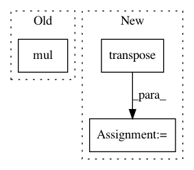

9708a6eaeed14443c9ccf26594155767fcbf83d6,gpytorch/models/exact_gp.py,ExactGP,__call__,#ExactGP#,57
Before Change
if not isinstance(test_test_covar, LazyVariable):
test_test_covar = NonLazyVariable(test_test_covar)
covar_correction = test_train_covar.matmul(self.chol)
predictive_covar = test_test_covar + CholLazyVariable(covar_correction).mul(-1)
else:
if isinstance(train_test_covar, LazyVariable):
train_test_covar = train_test_covar.evaluate()
if isinstance(test_train_covar, LazyVariable):
After Change
if not isinstance(test_test_covar, LazyVariable):
test_test_covar = NonLazyVariable(test_test_covar)
covar_correction_left = test_train_covar.matmul(self.low_rank_left)
covar_correction_right = test_train_covar.matmul(self.low_rank_right.transpose(-1, -2))
covar_correction_right = covar_correction_right.transpose(-1, -2)
covar_correction = MatmulLazyVariable(covar_correction_left, covar_correction_right).mul(-1)
predictive_covar = test_test_covar + covar_correction
else:
In pattern: SUPERPATTERN
Frequency: 3
Non-data size: 3
Instances
Project Name: cornellius-gp/gpytorch
Commit Name: 9708a6eaeed14443c9ccf26594155767fcbf83d6
Time: 2018-01-24
Author: gpleiss@gmail.com
File Name: gpytorch/models/exact_gp.py
Class Name: ExactGP
Method Name: __call__
Project Name: SeanNaren/deepspeech.pytorch
Commit Name: 9ea14875825b2ab63a43ad2f0f5159d99df86d02
Time: 2019-07-29
Author: rasmus.arpe@gmail.com
File Name: model.py
Class Name: Lookahead
Method Name: forward
Project Name: geomstats/geomstats
Commit Name: 1ffc5ad914da39a369337c1606a8ba788dbf9055
Time: 2020-08-25
Author: nicolas.guigui@inria.fr
File Name: geomstats/geometry/grassmannian.py
Class Name: Grassmannian
Method Name: random_uniform